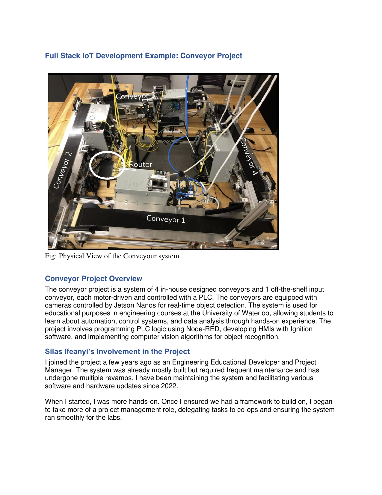
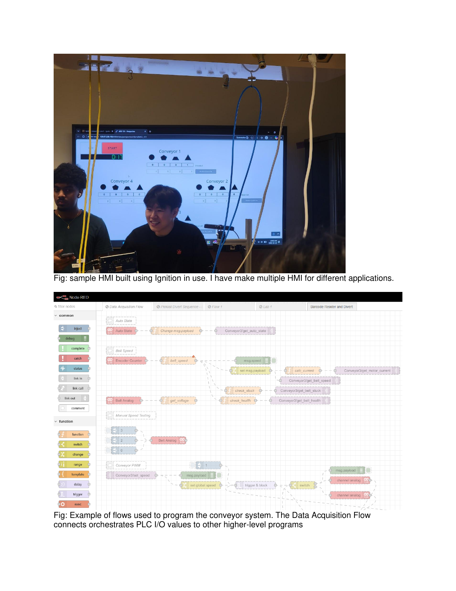

Project overview
The conveyor project is a hands-on automation system used in University of Waterloo engineering courses. It combines four in-house designed conveyors with one off-the-shelf input conveyor. Each conveyor is motor-driven and PLC-controlled, and camera nodes run computer vision locally for real-time object detection.
- System: Four custom conveyors plus one input conveyor, integrated into a multi-station learning platform.
- Control stack: PLC logic through Node-RED, HMI dashboards in Ignition, MQTT-based messaging, and Python-based integration.
- Vision stack: Cameras connected to NVIDIA Jetson Nanos for local shape/object detection.
- Role: Engineering Educational Developer and Project Manager, with hands-on maintenance and revamp work beginning in 2022.


Engineering contribution
The platform connects low-level industrial control to high-level data systems. The PLC and physical conveyor hardware provide the industrial layer, MQTT functions as the message backbone, Ignition provides the operator interface, and Python/Jetson Nano nodes add edge perception.
What it demonstrates
Industrial IoT integration
Real-time signal flow between sensors, PLC I/O, MQTT topics, Python scripts, and HMIs.
Physical AI at the edge
Local perception on Jetson Nano nodes, where shape classification is computed near the conveyor and sent to the automation stack.
Deployable education systems
A maintained platform that students can use to learn automation, control systems, data analysis, and computer vision through direct experimentation.

Source basis: Conveyor Project portfolio PDF provided by Silas Ifeanyi.